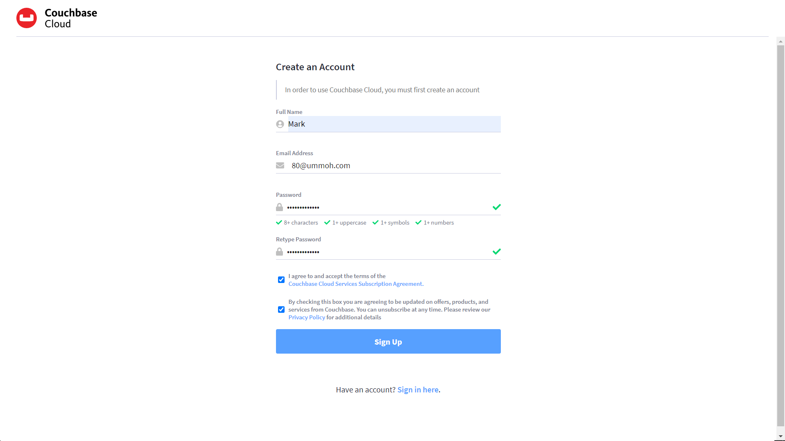
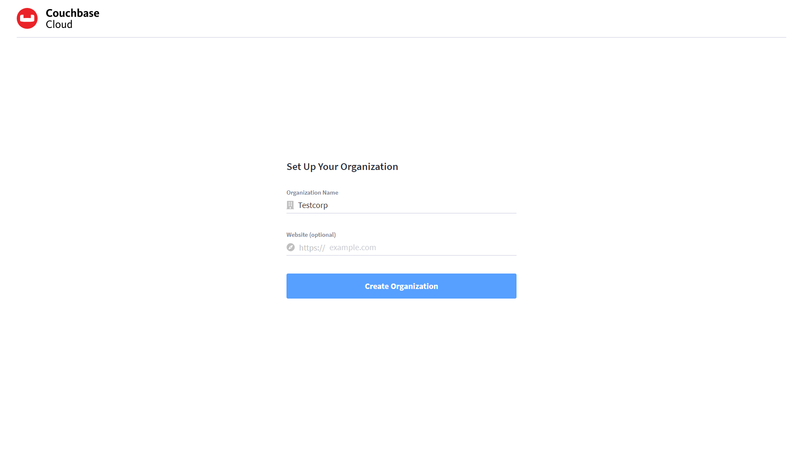
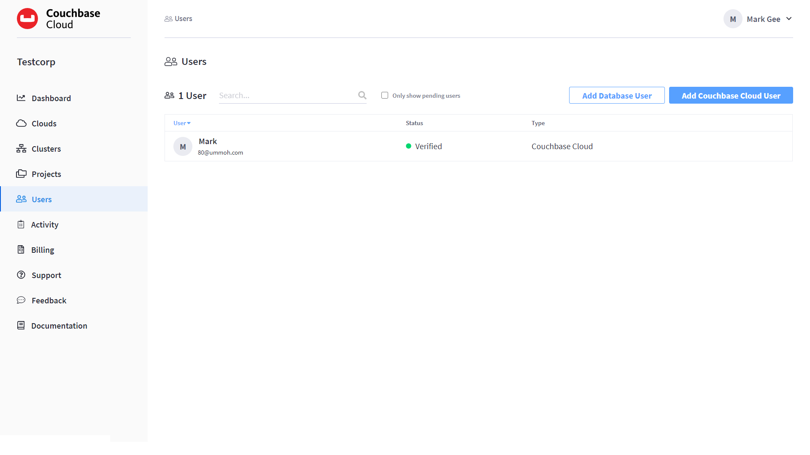
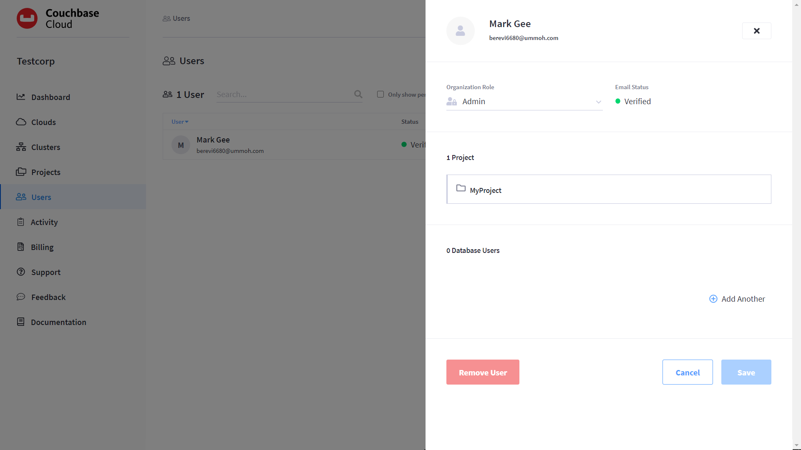
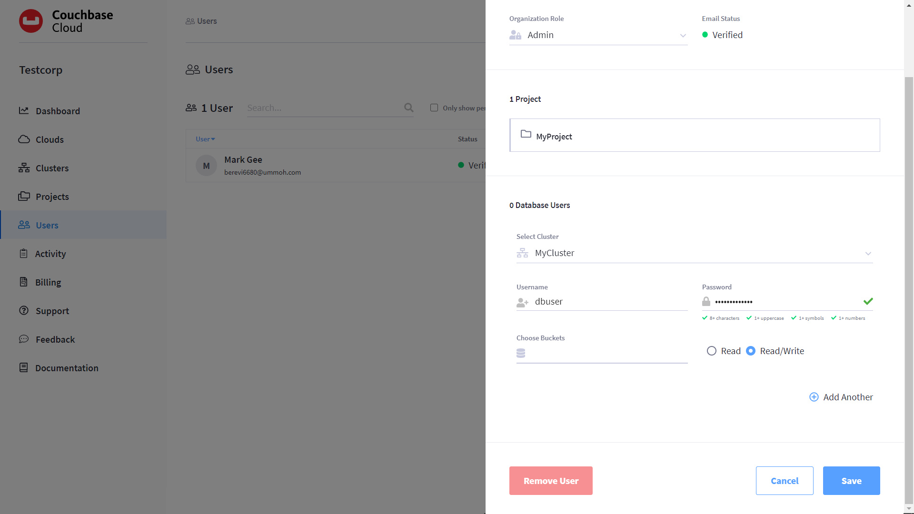
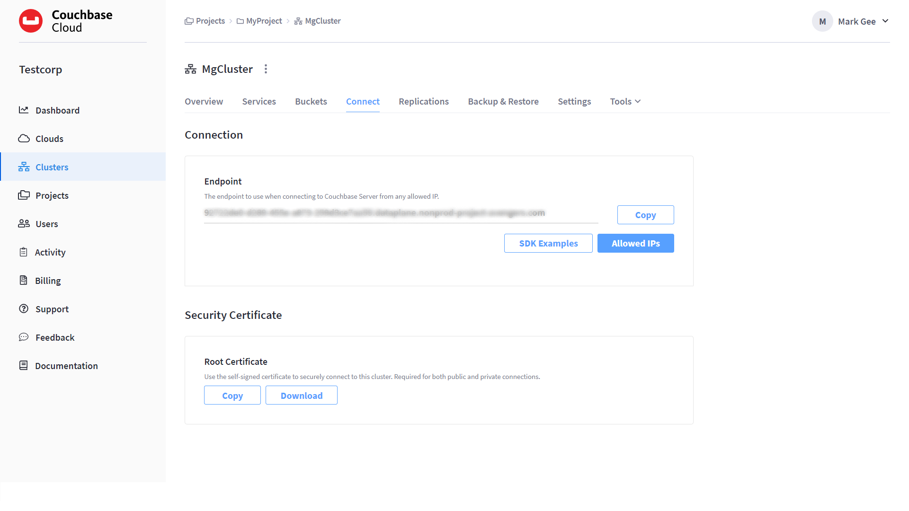

Getting Started with Couchbase Cloud Free Trial
Couchbase Cloud is a fully managed database-as-a-service that makes it easy to deploy a clustered database in the public cloud.
Couchbase Cloud works by creating a virtual private cloud (VPC) within your cloud provider account so that you can securely deploy, manage, and monitor clustered databases through a single user interface.
| Deploying Couchbase Cloud to Microsoft Azure? Make sure to complete the Azure account prerequisites HERE before continuing! |
This is the first tutorial in the series of “First Timer” tutorials. It guides you through creating your first cluster, and using it for storing and accessing data.
Sign Up for Your Free Trial
-
Go to https://cloud.couchbase.com/sign-up.
 -
Provide your account details.
Enter the following information to create your account:
-
Full Name
-
Email Address
-
Password
-
-
Review then click the checkbox to accept the Couchbase Cloud Services Agreement.
-
Click Sign Up to create your account.
-
Set up your organization (also known as a company account).
Provide the following information to set up your organization:
-
Company Name (this will be the name of your organization).
-
Website (optional)
-
Click “Create Organization”
-
-
Confirm your account.
An email will be sent to you asking you to confirm your email address. Once you click the confirmation link, your account will be confirmed and you’ll be able to sign into Couchbase Cloud at cloud.couchbase.com.
Deploy Your First Free Trial Cluster
Create an Account
After signing in, you’ll be brought to your organization’s Dashboard tab.
-
Click “Start Trial”, the Get Started fly-out appears.
-
Note: If you are starting a Sales Assisted or Proof-of-Concept account, and you have been provided an Activation ID, click the “Add your Activation ID” link.
-
Add your Activation ID in the appropriate box.
-
Connect a Cloud
Couchbase Cloud needs to establish a connection to your cloud provider in order to create a virtual private cloud (VPC) within your cloud provider account. These VPCs are referred to as Clouds, and they are leveraged by Couchbase Cloud to provision and manage clusters in your cloud provider account. Review the Cloud Provider Requirements before continuing.
-
Enter the cloud connection details.
- Service Provider
-
Select your cloud provider from the drop-down list.
- Cloud Name
-
Enter a name for the connected cloud.
- Available Regions
-
Select a cloud provider region from the drop-down list. This is the region in your cloud provider where Couchbase Cloud will set up a VPC environment. All clusters that use this connected cloud will be deployed in the selected region.
- CIDR Block
-
Enter an IP range in CIDR notation. In most cases, you can accept the default CIDR block.
-
Once you’ve configured the required fields, click Connect Cloud.
Your cloud provider’s console will open in a new browser tab. If the console doesn’t open, make sure that your browser is configured to allow pop-up windows from Couchbase Cloud and then try clicking the button again.
-
Log into your cloud provider using an account that has sufficient privileges and capabilities for deploying Couchbase Cloud resources.
-
Deploy the stack template.
After logging into your cloud provider’s console, a pre-configured resource template will be displayed in the region that you specified. This template contains the necessary configuration for Couchbase Cloud to be able to connect to your cloud provider and deploy a VPC under your account.
-
You must deploy the template to continue.
-
In AWS, deploy the template by checking the box labeled I acknowledge that AWS CloudFormation might create IAM resources with custom names and then clicking Create stack.
-
In Azure, click Review + create, then on the next screen deploy the template by clicking Create
Once the stack begins to deploy, return to the Couchbase Cloud UI. (It’s safe to close your cloud provider console.) The connection details in the Get Started fly-out menu will indicate that Couchbase Cloud is waiting for your cloud provider. Once the basic stack deployment is complete, and the initial connection is established, a series of status bars will appear, each representing a different step in the VPC deployment process.
You’ll know that the entire VPC deployment was successful once all of the steps are complete, and the Connection Status changes to Connected.

-

Name your Project and Cluster
Each cluster must be created within a project. Projects are the logical mechanism for grouping and managing clusters within your organization.
-
Enter a name for the project in the Project Name field.
-
Enter a name for your cluster in the Cluster Name field. (Note that this isn’t the cluster’s hostname, and can be changed at any time.)
-
Once you’ve entered names for your project and cluster, click Create Project & Cluster.
Configure and Deploy the Cluster
Now that you’ve connected a cloud, created a project, and given a name to your cluster, the next step is to configure and deploy the cluster.
The Cluster Sizing screen provides pre-defined cluster templates to make getting started easy. (You can read more about configuring a custom deployment in Cluster Sizing.)
-
Under Cluster Sizing, select the "Quick Start 30-Day Trial" cluster template.
The Free Trial account is limited to setting up a single cluster with either 1 or 3 nodes. Other sizing templates and/or custom configurations require an activation code.
-
Under Deployment Configuration, select the “M” template size.
Use the size toggle to switch between different sizes of the template.
For the ‘Evaluation Optimized’ template, there are two sizes available: S(small) and M(medium). If you switch between these two sizes, you’ll notice that the only difference between them is the number of Nodes (one node vs. three nodes). We recommend selecting the medium (M) sizing configuration for the ‘Quick Start 30-Day Trial’ template.
Click Next.
This brings you to the Deploy Cluster screen.

The Deploy Cluster screen shows a summary of the configuration details. Review the configuration to ensure that it meets your expectations. You can click the Prev button at the bottom of the page to go back and make any necessary changes.
Further down the page, in the Select Support Plan section, you must select a Support Plan for the cluster.
Select “30-Day Trial”. Click Deploy.
Couchbase Cloud will proceed with automatically deploying the cluster on your connected cloud.
A cluster will generally take up to 15 minutes to deploy.
Configure Database Access
In Couchbase Cloud, only a database user can read or write data on a cluster. You can either create a database-only user, or grant database permissions to an organization user. The following steps discuss how to grant database permissions directly to yourself.
-
Go to the Users tab in the main navigation.
 -
Click on your user name to open the user properties fly-out menu:
 -
In the Database Users section, click Add Another.
-
Select a cluster.
After selecting a cluster, multiple configurable fields appear.
-
Configure the database user.
-
Specify a username and password.
In the Username and Password fields, enter the username and password for the database user entity. These will be the credentials that you will use for authenticating on the cluster when connecting remotely via the Couchbase SDK or other tools. Note that the username cannot exceed 128 UTF-8 characters in length and cannot contain the following characters:
( ) < > @ , ; : \ " / [ ] ? = { } -
Configure bucket access.
Use the Choose Buckets field to specify the data buckets on the cluster that you will have access to.
For the purposes of this guide, it’s recommended that you leave the Choose Buckets field blank, as this grants you access to all current and future buckets.
Select Read/Write access. If you left the Choose Buckets field blank, this means you’ll have read/write permissions for all current and future buckets on the cluster.

-
-
Once you’ve finished making the desired configurations, click Save.
-
Note the database username and password, we will be using them in later tutorials!
Load Sample Data and Run Your First Query and Search Examples
A quick way to start interacting with data in your cluster is to load one or more sample buckets. Sample buckets contain example data, as well as example indexes, for your experimentation.
Go to the Clusters tab in the main navigation and click on your new cluster.
Sample buckets can be found under each cluster’s tab.
Under Sample Data, click the Import button next to the available sample buckets to load them into your cluster. (Note that it may take some time for a sample bucket to load and show up in the relevant areas of the Couchbase Cloud UI.)
In Couchbase, buckets serve as the mechanism for storing data, and are the principal component of the Data Service that runs on every cluster. Buckets are analogous to a database table space or file group, and must be created before you can store any data on a cluster.
All of the buckets on a cluster can be viewed from the cluster’s Buckets tab.
For more information about interacting with buckets, refer to Manage Buckets.
About the Default Bucket
Couchbase Cloud creates a small, empty bucket named couchbasecloudbucket on every deployed cluster to act as the default bucket. This bucket can be used for immediate experimentation with Couchbase features, including inserting and modifying data via the SDK.
Sample Indexes
In Couchbase, primary and global secondary indexes — also known as just indexes — are predefined subsets of bucket-data created by the Index Service. The sample buckets automatically created indexes upon import. All of the indexes in a cluster can be viewed under the cluster’s tab. For more information about viewing and interacting with indexes, refer to Index Service.
Query Sample Data
The Couchbase query language is called N1QL (pronounced “nickel”). On clusters running the Query Service, the Couchbase Cloud UI provides an interactive query tool called the Query Workbench. Using the Query Workbench, you can conveniently explore data, create, edit, run, and save N1QL queries, view and save query results, and explore the document structures in a bucket — all in a single window.
The Query Workbench is available under your cluster’s tab.
Try out the Query Workbench by entering the following N1QL query into the Query Editor:
SELECT * FROM `travel-sample` WHERE type="airport" LIMIT 10;When executed, this query returns a maximum of 10 airport documents, and lists all of the fields that it contains. To execute the query, click Execute. The results are displayed in the Query Results field:
N1QL also supports ANSI JOIN syntax. Following is an example query with a JOIN clause.
This query uses an inner join to list the source airports and airlines that fly into SFO, where only the non-null route documents join with matching airline documents.
Copy and paste the following query into the Query Editor, then click Execute.
SELECT route.airlineid, airline.name, route.sourceairport, route.destinationairport
FROM `travel-sample` route
INNER JOIN `travel-sample` airline
ON route.airlineid = META(airline).id
WHERE route.type = "route"
AND route.destinationairport = "SFO"
ORDER BY route.sourceairport;The results are displayed in the Query Results field:
To learn more about using the Query Workbench, refer to Query Workbench.
Configure Full Text Search
Couchbase Cloud Full Text Search (FTS) lets you create, manage, and query specially purposed indexes, defined on JSON documents within a Couchbase bucket.
The Full Text Search editor is available under each cluster’s tab.
Click Add Index; the Add Index fly-out appears.
We will create a Full Text Search index on the “hotel” type documents in the “travel-sample” bucket. This will allow searching hotel document fields for terms like “free wifi” or “bed & breakfast”. This index will also be used by the sample application tutorial later in this tutorial series.
Enter the following information and then click Continue to configuration:
-
Name: “hotels”
-
Bucket: Select “travel-sample”
The Index Details for the hotels search index are displayed.
Scroll down to the Index Settings.
Under Type Mappings, click “Add Mapping”.
The “Add Mapping” fly-out appears.
Under name, enter “hotel”.
Click “Create Mapping”. The type mappings setting should look like so:
Click “Create Index”.
The “hotels” Full Text index is displayed on the Full Text Search page.
Now we can test the search index.
Click the “hotels” Full Text Index to view its details.
Click the Search button, the Search fly-out appears.
Under Settings, enter “free wifi” then click the Search button.
All hotel documents with matching terms are listed.
Experiment with other search terms. Click the x in the upper right to close the Search fly-out screen.
Learn more about Couchbase Cloud Full Text Search here.
Now that you have your environment established, lets gather some connection information for the next tutorial exercises.
Next Steps
Prepare for Connecting from an SDK
-
Go to the cluster’s Connect tab in the Couchbase Cloud Control Plane.
-
Go to the Clusters tab in the main navigation.
-
Find and click on your cluster.
This opens the cluster with its Overview tab selected.
-
Click the Connect tab.

-
-
The Endpoint will be used for connecting to this cluster in the subsequent tutorial exercises. For now, copy and paste the endpoint to a text file and set aside.
-
Next download the Security Certificate for connecting to your cluster using BI tools. Under Security Certificate, click Download. Your Security Certificate .pem file will download, save in a local folder for use in subsequent exercises.
-
You must also add your own IP address to connect to your cluster. Go to https://www.whatsmyip.org/ (or any IP identification site) and note your IP address. Copy your IP address.
-
Click the Allowed IPs button. The Allowed IPs fly-out appears.
-
Under Allow an IP, enter your IP address.
-
Uncheck “Save as temporary”.
-
Optionally add a descriptive comment, then click the Add IP button.
-
Click the Save button, your IP address is saved as an Allowed IP for connecting to your cluster.
Congratulations! You are now ready for the next set of exercises in the next “First Timers” tutorial, Using SDKs with Couchbase Cloud.